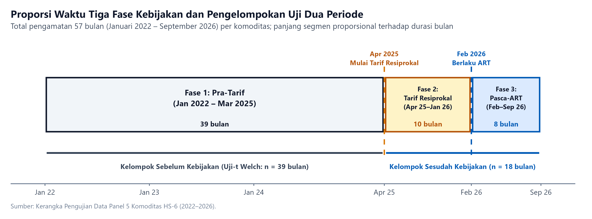
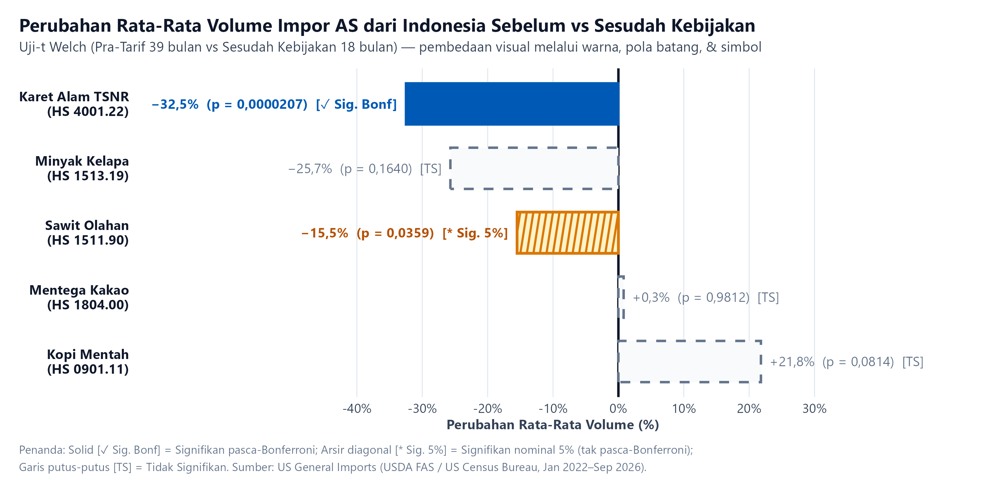
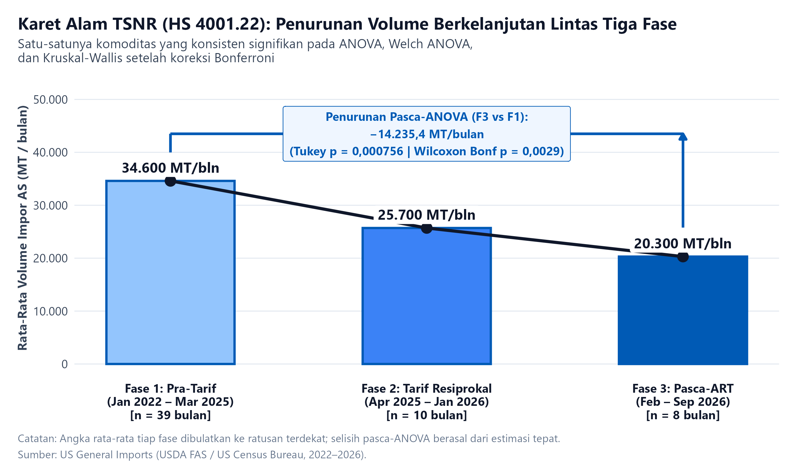
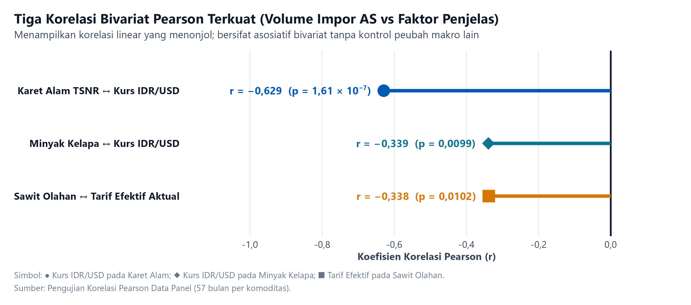
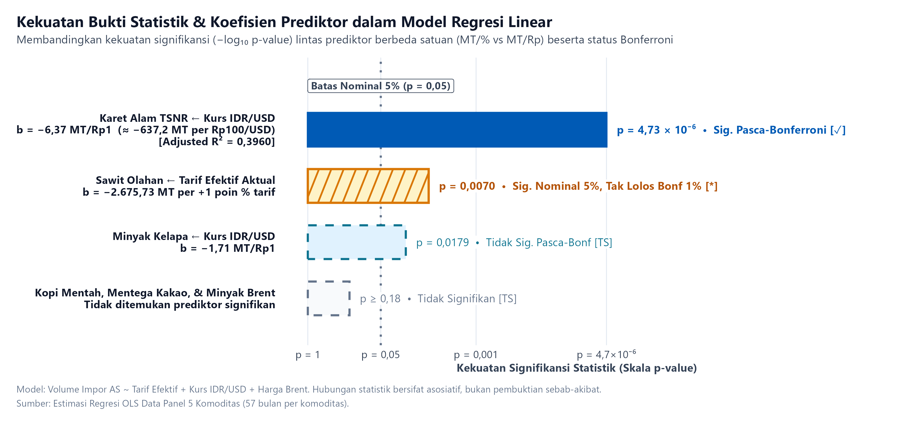

Infografis Riset Kuantitatif • Analisis Statistika (STA2511)
Satu Perubahan Kebijakan,
Lima Respons Perdagangan yang Berbeda
Analisis Kebijakan Tarif Resiprokal AS, Kurs IDR/USD, dan Harga Minyak Dunia terhadap Volume Impor Agrikultur AS dari Indonesia pada Level HS-6 (Januari 2022 – September 2026).
1. Cakupan Data & Konteks Kebijakan
Panel Bulanan Seimbang • 57 Bulan × 5 Pos HS-6
Pengukuran Impor Umum AS, Tarif Efektif Aktual, dan Tiga Fase Kebijakan
285 Observasi
57 bulan per komoditas (Jan 2022–Sep 2026)
5 Pos Tarif HS-6
Sawit, Karet, Kopi, Minyak Kelapa, Kakao
3 Fase Kebijakan
Pra-Tarif (39) • Tarif (10) • Pasca-ART (8 bln)
Koreksi Bonferroni
Kendali positif palsu uji lintas 5 komoditas
Volume = Impor AS dari Indonesia (US General Imports): Volume kedatangan komoditas Indonesia di kepabeanan AS dalam satuan Metrik Ton (MT/bln), bukan ekspor total global Indonesia.
Tarif = Tarif Efektif Aktual (Effective Tariff): Rasio bea masuk aktual terhadap nilai impor kepabeanan (Calculated Duty / Customs Value) di USITC, bukan tarif resmi pengumuman.

2. Komparasi Sebelum vs Sesudah Kebijakan (Uji-t Welch)
Sebelum Kebijakan (39 bln) vs Sesudah Kebijakan (18 bln)
Penurunan Terdalam Terjadi pada Karet Alam (−32,5%), Sementara Komoditas Lain Beragam

Karet Alam TSNR (HS 4001.22)
Turun −11.245,3 MT/bln • p = 0,0000207
−32,5%
[✓] Lolos Bonferroni
Sawit Olahan (HS 1511.90)
Signifikan nominal 5% • p = 0,0359
−15,5%
[*] Taraf Nominal 5%
Minyak Kelapa (HS 1513.19)
Selisih rata-rata acak • p = 0,1640
−25,7%
[TS] Tidak Sig.
Mentega Kakao (HS 1804.00)
Volume cenderung stagnan • p = 0,9812
+0,3%
[TS] Tidak Sig.
Kopi Mentah (HS 0901.11)
Peningkatan belum signifikan • p = 0,0814
+21,8%
[TS] Tidak Sig.
3. Temuan Utama Konsisten Lintas 3 Fase
HS 4001.22 • ANOVA, Welch ANOVA & Kruskal-Wallis
Hanya Karet Alam TSNR yang Lolos Koreksi Bonferroni: Turun Berlanjut Hingga Pasca-ART

Penurunan Pasca-ANOVA (Fase 3 vs Fase 1)
−14.235,4 MT / bulan
Rata-rata turun berkelanjutan dari 34.600 MT (Fase 1) → 25.700 MT (Fase 2) → 20.300 MT/bln (Fase 3).
Tukey p = 0,000756 | Wilcoxon Koreksi Bonferroni p = 0,0029.
Tukey p = 0,000756 | Wilcoxon Koreksi Bonferroni p = 0,0029.
Paradoks Tarif Efektif Karet Alam
Tarif Aktual ≤ 0,08%
Berbeda dari Sawit, Kopi, Kakao & Minyak Kelapa yang mencatat lonjakan tarif efektif hingga ~19%, Karet Alam mengalami kontraksi terdalam padahal beban tarif efektifnya hampir nol.
Triangulasi Tiga Metode: Karet Alam TSNR adalah satu-satunya dari 5 komoditas yang konsisten signifikan setelah koreksi Bonferroni pada uji ANOVA, Welch ANOVA, dan Kruskal-Wallis. Penurunan tetap berlanjut setelah Fase Pasca-ART dimulai Feb 2026.
4. Penguraian Faktor Ekonomi (Korelasi & Regresi OLS)
Model: Volume Impor AS ~ Tarif Efektif + Kurs IDR/USD + Harga Brent
Tarif Berkaitan dengan Sawit Olahan; Nilai Tukar IDR/USD Erat Berkaitan dengan Karet Alam
A. Korelasi Bivariat Pearson Menonjol

Karet Alam TSNR ↔ Kurs IDR/USD: r = −0,629 (p = 1,61 × 10⁻⁷) — asosiasi bivariat terkuat dalam studi ini.
Minyak Kelapa ↔ Kurs IDR/USD: r = −0,339 (p = 0,0099) — arah negatif sejalan dengan Karet.
Sawit Olahan ↔ Tarif Efektif: r = −0,338 (p = 0,0102) — berkorelasi negatif langsung dengan beban tarif.
Harga Brent & Komoditas Lain: Korelasi bivariat Harga Minyak Brent, Kopi Mentah, dan Mentega Kakao tidak menonjol dibanding kurs dan tarif efektif.
B. Koefisien Parsial & Signifikansi Regresi Linear Berganda

Karet Alam TSNR (Kurs IDR/USD): b = −6,37 MT/Rp1 (≈ −637,2 MT per Rp100/USD); p = 4,73 × 10⁻⁶; Adjusted R² = 0,3960 (lolos koreksi Bonferroni).
Sawit Olahan (Tarif Efektif): b = −2.675,73 MT per +1 poin %; p = 0,0070. Signifikan pada taraf nominal 5%, tetapi tidak melewati koreksi Bonferroni 1%.
Minyak Kelapa & Lainnya: Kurs di Kelapa b = −1,71 MT/Rp1 (p = 0,0179, tidak lolos Bonferroni). Kopi Mentah, Mentega Kakao, serta prediktor Harga Brent tidak signifikan di model.
5. Sintesis Lintas Lima Komoditas HS-6
[✓] Lolos Bonferroni • [*] Taraf Nominal 5% • [TS] Tidak Signifikan
Peta Respons Lengkap: Dari Sinyal Konsisten Hingga Tidak Signifikan
| Komoditas (HS-6) | Uji-t (Pra vs Pasca) | Uji 3 Fase (ANOVA/KW) | Korelasi Pearson Utama | Regresi Linear OLS (Simultan) |
|---|---|---|---|---|
| Karet Alam TSNRHS 4001.22 (Tarif ≤ 0,08%) | −32,5% (−11.245,3 MT/bln) p = 0,0000207 [✓ Bonf] |
Konsisten Signifikan [✓] F3 vs F1: −14.235,4 MT/bln |
Kurs IDR/USD: r = −0,629 (p = 1,61×10⁻⁷) |
Kurs: b = −6,37 MT/Rp1 (p = 4,73×10⁻⁶) Lolos Bonf • Adj. R² = 0,3960 |
| Sawit OlahanHS 1511.90 (Puncak 19,00%) | −15,5% p = 0,0359 [* Nominal 5%] |
Tidak Lolos Bonferroni | Tarif Efektif: r = −0,338 (p = 0,0102) |
Tarif: b = −2.675,73 MT/% (p = 0,0070) Sig. nominal 5%, tak lolos Bonf 1% |
| Minyak KelapaHS 1513.19 (Puncak 18,93%) | −25,7% p = 0,1640 [TS] |
Tidak Lolos Bonferroni | Kurs IDR/USD: r = −0,339 (p = 0,0099) |
Kurs: b = −1,71 MT/Rp1 (p = 0,0179) Tidak signifikan pasca-Bonferroni |
| Kopi MentahHS 0901.11 (Puncak 18,85%) | +21,8% p = 0,0814 [TS] |
Tidak Signifikan [TS] | Tidak Menonjol | Tidak ditemukan prediktor signifikan |
| Mentega KakaoHS 1804.00 (Puncak 19,00%) | +0,3% p = 0,9812 [TS] |
Tidak Signifikan [TS] | Tidak Menonjol | Tidak ditemukan prediktor signifikan |
6. Kesimpulan Utama & Batasan Interpretasi
Validitas Inferensi • Asosiasi ≠ Kausalitas
Tiga Pelajaran Kebijakan serta Disiplin Membaca Bukti Statistik
01 • Heterogenitas Respons
Tidak Ada Satu Pola Tunggal
Respons perubahan rata-rata volume antar-lima pos tarif HS-6 bervariasi lebar dari −32,5% hingga +21,8%, menegaskan perlunya evaluasi spesifik per komoditas.
02 • Bukti Terkuat Studi
Tekanan Karet Terikat Kurs
Karet Alam TSNR mengalami kontraksi terdalam lintas seluruh fase (F3 vs F1 −14.235,4 MT/bln) yang berkaitan erat dengan nilai tukar IDR/USD (Adj. R² = 0,3960).
03 • Sinyal Tarif & Faktor Luar
Sawit Peka Tarif Nominal 5%
Hanya Sawit Olahan yang mencatat asosiasi negatif parsial dengan tarif efektif pada taraf nominal 5% (tak lolos Bonf 1%), sedangkan Brent belum signifikan di kelima model.
1. Asosiasi ≠ Kausalitas Tunggal
Uji beda, korelasi, dan regresi mengukur keterkaitan statistik observasional—bukan pembuktian sebab-akibat langsung kebijakan tarif semata.
2. Tidak Signifikan ≠ Tidak Terdampak
Ketiadaan bukti kuat pada Kopi, Mentega Kakao, atau Minyak Kelapa tidak membuktikan komoditas tersebut kebal terhadap perubahan pasar.
3. Faktor di Luar Model
Kontrak jangka panjang, pasokan negara pesaing, stok pembeli AS, dan kapasitas logistik tetap memengaruhi pergerakan volume bulanan.